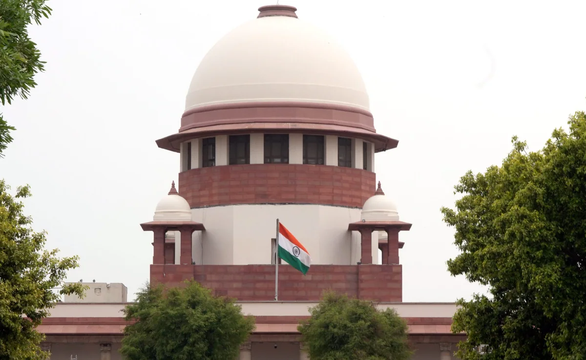

Today's news
Diwas' On June 25, Says Amit Shah

The announcement was made by Home Minister Amit Shah, who said the day will commemorate the contributions of those "who endured the inhuman pains of the 1975 Emergency".
Making the announcement on X, Home Minister Amit Shah posted a gazette notification and wrote, "On June 25, 1975, the then PM Indira Gandhi, in a brazen display of a dictatorial mindset, strangled the soul of our democracy by imposing the Emergency on the nation. Lakhs of people were thrown behind bars for no fault of their own, and the voice of the media was silenced."
"The Government of India has decided to observe the 25th of June every year as 'Samvidhaan Hatya Diwas.' This day will commemorate the massive contributions of all those who endured the inhuman pains of the 1975 Emergency," he added.
The opposition, which had come together under the INDIA umbrella, seized on the opportunity to claim that the BJP wanted to end reservation and "dismantle" the Constitution. Congress leader Rahul Gandhi and others also began carrying a copy of the foundational document and stated repeatedly that the INDIA alliance was fighting to protect the Constitution.
As the INDIA narrative began to gain traction, the BJP and the government went into damage-control mode, claiming that the opposition was spreading lies. The issue did, however, work to the INDIA alliance's favour in several states and played a role in limiting the BJP to 240 Lok Sabha seats and the NDA to 293.
"Arvind Kejriwal Cannot...": What Supreme Court Said When Giving Bail
While on bail, the Chief Minister cannot "sign official files unless it is required and necessary for obtaining clearance / approval of the Lieutenant Governor of Delhi".
New Delhi: Delhi Chief Minister Arvind Kejriwal on Friday won half his big legal battle - bail awarded last month by a trial court, which the High Court had paused, was upheld this morning by the Supreme Court.
He was arrested by the Enforcement Directorate in March in the alleged liquor policy scam.The Supreme Court's ruling was the good news. The bad - he remains in jail since he was also arrested by the Central Bureau of Investigation, days after the lower court's bail, in the same case.
As part of the conditions laid down by a two-judge bench of Justice Sanjiv Khanna and Dipankar Datta, the AAP boss cannot visit his office, or the Delhi Secretariat, during his period of release.
The Chief Minister also cannot "sign official files unless it is required and necessary for obtaining clearance / approval of the Lieutenant Governor of Delhi".
READ | Big Supreme Court Relief For Kejriwal In Delhi Liquor Policy Case.Mr Kejriwal must also furnish bail bonds worth ₹ 50,000 and a surety of the same amount.
He has also been directed, as is protocol in such instances, to "not interact with any of the witnesses and / or have access to any official files connected with the case".READ | Arvind Kejriwal Can't Go To Office, Sign Files While Out On Bail
The key parts of the bail conditions - that the Chief Minister not visit his office or sign official files - are identical to those imposed on him when the top court granted interim bail to campaign in the election.
Latest Flashpoint In Trinamool vs Bengal Governor: Rejected Bills

According to the Bengal government's submission, denying approval to bills without providing grounds undermines democratic governance.
New Delhi: The West Bengal government has filed a petition in the Supreme Court challenging Governor CV Ananda Bose's refusal to give assent to eight bills. The state's counsel, Astha Sharma, urged the court to list the petition for immediate consideration.
The controversy arose after Governor's rejection of these bills without citing any reasons, prompting the Trinamool Congress-led government to argue that this action violates Article 200 of the Constitution. According to the state's submission, denying approval to bills without providing grounds undermines democratic governance.
"The Governor's oversight poses a threat to democratic governance and infringes upon the rights of the state," argued the state's lawyer.
25 Killed, 39 Injured In 24 Hours In Lightning Incidents In Bihar
Bihar Chief Minister Nitish Kumar directed officials to provide ₹ 4 lakh compensation to each of the families of the victims.
Patna: As many as 25 people lost their lives and 39 others were injured in lightning strikes across several districts of Bihar in the last 24 hours.
Bihar Chief Minister Nitish Kumar on Friday expressed condolences and directed officials to provide ₹ 4 lakh compensation to each of the families of the victims.
He also urged people to stay indoors during the rain and thunderstorms.Patna: As many as 25 people lost their lives and 39 others were injured in lightning strikes across several districts of Bihar in the last 24 hours.
Bihar Chief Minister Nitish Kumar on Friday expressed condolences and directed officials to provide ₹ 4 lakh compensation to each of the families of the victims.
He also urged people to stay indoors during the rain and thunderstorms.The Meteorological Department has forecast moderate to heavy rain with thunderstorms and lightning in many areas, including Patna, on Friday, and issued an 'Orange Alert' for Kishanganj and Araria districts.
On Thursday, 22 students in Barka Gaon Village, under Tarari police station, were injured when lightning struck a palm tree near their classrooms. They were admitted to Sadar Hospital Arrah.
In other districts, 17 more people sustained burn injuries due to lightning strikes.The met department recorded 112.2 mm of rainfall in the Bahadurganj block in Kishanganj District.Patna received 52.8 mm of rain on Thursday.
Mahatma Gandhi's Statue Removed In Assam, Chief Minister Says "Not Aware"
Tushar Gandhi, great-grandson of Mahatma Gandhi, had attacked the BJP government in Assam over the statue's removal.
The removal of a statue of Mahatma Gandhi in the the tea town of Doomdooma in Assam had lead to a massive controversy with student leaders protesting the sudden removal. Two days ago, the 5.5 foot statue of Mahatma Gandhi, placed at the town's Gandhi Chowk in Tinsukia district, was removed by an excavator, triggered widespread backlash.
However, Assam Chief Minister Himanta Biswa Sarma said that he was not aware of the decision to remove the statue. "I am not aware of this decision taken by the district administration. Let me verify the facts. Assam owes so much to Mahatma Gandhi. He stood firmly with Bharat Ratna Gopinath Bordoloi when the Congress party led by Nehru wanted to include Assam in Pakistan under the Grouping Plan," he said.
The prominent All Assam Student Union (AASU) launched protests alleging that Gandhi's statue was removed to build a clock tower. "When we met the municipal board and the town committee, they told us they have a plan to build clock tower but our question is why the civil society here was not taken into confidence before taking the decision to uproot the Gandhi statue?" said Pritam Neog, an AASU leader.
Trainee IAS Officer Puja Khedkar To Be Sacked If Guilty. Centre Starts Probe
Puja Khedkar may also face criminal action if the allegations of hiding facts and misrepresentation are found to be true, sources said.
New Delhi/Mumbai: Trainee IAS officer Puja Khedkar, who is in the eye of a storm over alleged misuse of power and claims that she made in her UPSC candidature, has landed in more trouble with the central government launching a probe against her.
Ms Khedkar had courted controversy over using a siren on her private Audi and raising demands for a separate house and car - privileges not available to junior officers. But the 2023-batch IAS officer now faces far more serious charges that raise questions about her selection process in the civil services.
Manoj Dwivedi, additional secretary in the Department of Personnel and Training (DoPT), has started the investigation against her, which will be completed in two weeks.She may be dismissed if she's found guilty, sources said.She may also face criminal action if the allegations of hiding facts and misrepresentation are found to be true, they added.
When confronted by the media, she has remained tight-lipped on the charges against her, maintaining she was "not authorised" to speak about the matter.
Ms Khedkar, who was posted as an assistant collector in Pune, was transferred to Washim after the Pune Collector raised a complaint with the Chief Secretary of the state government.
The action came after she was found using a siren and a "Government of Maharashtra" sticker on her private luxury sedan. She was also found using the Pune Additional Collector Ajay More's office while he was away. She reportedly removed office furniture and even demanded letterheads and a VIP number plate. These perks are not available for junior officers - who are on probation for 24 months.
Watch: People Gather In Middle Of Road As 4.2 Earthquake Strikes Kashmir
In the 18-second video, shoppers can be seen gathered in the middle of the road when the earthquake hit.
A 4.2 magnitude earthquake hit Jammu and Kashmir on Friday. Data released by the National Center for Seismology (NCS) said that an earthquake measuring 4.2 on the Richter scale occurred at Kashmir's Baramulla at 12.26 pm.
“The epicentre of the earthquake was in the Baramulla area of the Valley. It occurred at a depth of 5 km inside the earth's crust. The coordinates of the earthquake are altitude 34.32 degrees north and longitude 74.41 degrees east,” the data said.
A video showed a busy market come to an halt after the tremors shook the area. In the 18-second video, shoppers can be seen gathered in the middle of the road when the earthquake hit. Cars and motorcycles stopped on the road, waiting for the quake to pass.
No casualty or damage to property has been reported so far.
One Killed After Boulder Falls On Taxi During Sikkim Landslide
The incident comes amidst the monsoon's severe impact on Sikkim, with NH 10vital for connecting the state with the rest of the countryfacing intermittent closures due to landslides.
Guwahati: One person was killed today when a taxi travelling on National Highway-10 from Lingi to Singtam in Sikkim's Gangtok was hit by a large boulder. The accident was caused due to a landslide.
The incident comes amidst the monsoon's severe impact on Sikkim, with NH 10—vital for connecting the state with the rest of the country—facing intermittent closures due to landslides and rising Teesta River levels. The alternative route via Kalimpong and Darjeeling districts is also frequently disrupted by landslides.
Sikkim's Pakyong Airport has been non-operational since the start of the monsoon season, and helicopter services remain cancelled throughout this period.
Despite the challenges, the Sikkim government continues to press for NH 10's maintenance by central agencies, emphasizing its critical role in national security and facilitating Army movements. This demand was reiterated by Chief Minister Prem Singh Tamang in discussions with Prime Minister Narendra Modi and other Union Ministers.
Watch: How Zelenskyy Reacted When Biden Called Him "President Putin"

The latest gaffes come amid growing calls for Joe Biden, already the oldest person ever to serve as the US president, to step aside.
In yet another gaffe amid concerns over his re-election bid, US President Joe Biden today mistakenly introduced Ukraine President Volodymyr Zelenskyy as his Russian rival Vladimir Putin.
"And now I want to hand it over to the president of Ukraine, who has as much courage as he has determination, ladies and gentlemen, President Putin," he said, referring to Zelenskyy while speaking on the sidelines of the NATO Summit in Washington.
Zelenskyy looked nonplussed, then was seen shaking his head and smiling to himself.Zelenskyy, who had by then recovered from his bafflement, responded by saying, "I am better (than Putin).""You are a hell of a lot better," Biden replied before Zelenskyy began his address.
Shortly afterward, Biden made another blunder when he referred to his deputy, Kamala Harris, as "Vice President" Trump at a high-stakes news conference.
Opinion | Hugs Aside, This Is How Much India And Russia Really Mean To Each Other
Everyone loves a good host. Everyone loves a powerful host. Everyone loves a host who gives guided tours.
In this limited regard, the Prime Minister of India is no different from this author. Both are cherished guests in their
gracious hosts' respective homes, and this summer sojourn is loaded with meaning for all and sundry. Prime Minister Narendra Modi's Moscow visits, six so far, always generate interest across global capitals.
The latest two-day visit is no exception.Modi's Putin meeting has happened at an interesting juncture in history for both the leaders. While the Indian Prime Minister has just started his consecutive third term with a much smaller mandate than his previous two stints, Putin's domestic base is shaky as usual. The Western world, however, continues to view them critically.
Modi's Putin meeting has happened at an interesting juncture in history for both the leaders. While the Indian Prime Minister has just started his consecutive third term with a much smaller mandate than his previous two stints, Putin's domestic base is shaky as usual. The Western world, however, continues to view them critically.